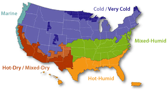

The U.S. Department of Energy (DOE) Building America program has developed a series of technology-specific case studies and best practices guides that may be applicable to all climate zones.
Technology Solutions for New and Existing Homes
These case studies from Building America research teams and national laboratories describe energy-saving solutions for both new and existing homes, classified into four categories. |

Project: Advanced Extended Plate and Beam Wall System in a Cold-Climate House
Technology Focus: Building envelope
Profile: This case study describes the highly insulated (high-R) light-frame wall system, called the extended plate and beam (EP&B), for use above grade in residential buildings.
Project: Apartment Compartmentalization with an Aerosol-Based Sealing Process
Technology Focus: Air sealing, building envelope
Profile: In this case study, the Consortium for Advanced Residential Buildings team demonstrated the automated air sealing and compartmentalization of buildings through the use of an aerosolized sealant developed by the Western Cooling Efficiency Center at University of California Davis.
Project: Application of Spray Foam Insulation Under Plywood and OSB Roof Sheathing
Technology Focus: Insulation, existing homes with unvented cathedralized roofs
Profile: Building Science Corporation conducted hygrothermal modeling and explorations of 11 in-service roof systems that used spray polyurethane foam to study the performance of this system for air sealing in complex assemblies, particularly roofs.
Project: Capillary Break Beneath a Slab: Polyethylene Sheeting Over Aggregate
Technology Focus: Foundation, water management
Profile: In this project, IBACOS worked with a builder of single- and multifamily homes in southwestern Pennsylvania (climate zone 5) to understand its methods of successfully using polyethylene sheeting over aggregate as a capillary break beneath the slab in new construction.
Project: Cladding Attachment Over Mineral Fiber Insulation Board
Technology Focus: Exterior insulation of wood-framed buildings, new and existing homes
Profile: In this project, Building Science Corporation studied the performance of mineral fiber insulation sheathing as a viable solution for exterior insulation retrofits, and developed guidance for retrofit assembly for wood-frame roof and walls and for cast concrete foundations.
Project: Cladding Attachment Over Thick Exterior Insulating Sheathing
Technology Focus: Exterior insulation, new and existing homes
Profile: Building Science Corporation investigated the benefits—and limitations—of adding insulation to the exterior of buildings as an effective means of increasing the thermal resistance of wood-framed walls and mass masonry wall assemblies.
Project: Cold Climate Foundation Wall Hygrothermal Research Facility
Technology Focus: Building envelope and wall systems
Profile: This case study describes the University of Minnesota’s Cloquet Residential Research Facility in northern Minnesota, which features more than 2,500 ft2 of below-grade space for building systems foundation hygrothermal research.
Project: Complete and Fully Aligned Air Barrier
Technology Focus: Air sealing, insulation
Profile: This research project, conducted by Pacific Northwest National Laboratory, focused on eliminating excessive humidity in the attic of a multi-floor, single-family home that was causing condensation and water damage along the roof and eaves.
Project: Cost Analysis of Roof-Only Air Sealing and Insulation Strategies on 1-1/2 Story Homes in Cold Climates
Technology Focus: Roof, air sealing, insulation
Profile: This project describes the use of the External Thermal and Moisture Management System developed by the NorthernSTAR Building America Partnership for deep energy retrofits.It is effective in reducing energy loss through the building envelope, improving building durability, reducing ice dams, and providing opportunities to improve occupant comfort and health.
Project: Durable Interior Foundation Insulation Retrofits for Cold Climates
Technology Focus: Foundations
Profile: This approach by the NorthernSTAR Building America Partnership team addresses thermal and moisture management for basements from the interior face of the wall without disturbing the exterior soil and landscaping.
Project: Excavationless: Exterior-Side Foundation Insulation for Existing Homes
Technology Focus: Insulation, foundations
Profile: This project describes an innovative, minimally invasive foundation insulation upgrade technique on an existing home that uses hydrovac excavation technology combined with a liquid insulating foam. Cost savings over the traditional excavation process ranged from 23% to 50%.
Project: Field Trial of an Aerosol-Based Enclosure Sealing Technology
Technology Focus: Insulation
Profile: This project demonstrated a new method for sealing building envelope air leaks using an aerosol sealing process developed by the Western Cooling Efficiency Center at the University of California-Davis, which is part of the U.S. Department of Energy’s Building America research team Alliance for Residential Building Innovation. Developed in a laboratory setting, this process was applied to six single-family homes in this study and involved pressurizing a building while applying an aerosol sealant to the interior.
Project: High-Performance Walls in Hot-Dry Climates
Technology Focus: Walls
Profile: In this project, the Alliance for Residential Buildng Innovation team worked with California builders to to implement wall assemblies meeting a U-value lower than 0.050 Btu/h-ft2-°F. The team observed and documented construction methods and obtained construction costs from builders to inform cost estimates for a range of advanced wall system types and insulation types.
Project: Hygrothermal Performance of a Double-Stud Cellulose Wall
Technology Focus: Walls
Profile: In this project, the Consortium for Advanced Residential Buildings research team monitored a double-stud assembly in climate zone 5A to determine the accuracy of moisture modeling and make recommendations to ensure durable and efficient assemblies..
Project: Initial and Long-Term Movement of Cladding Installed Over Exterior Rigid Insulation
Technology Focus: Insulation, walls
Profile: This research conducted by Building Science Corporation evaluated the system mechanics and long-term performance of the use of wood furring strips attached through the insulation back to the structure to provide a convenient cladding attachment location for exterior insulation.
Project: Innovative Retrofit Foundation Insulation Strategies
Technology Focus: Foundation insulation
Profile: In this project, the NorthernSTAR Building America Partnership evaluated a retrofit insulation strategy for foundations that is designed for use with open-core concrete block foundation walls. The three main goals were to improve moisture control, improve occupant comfort, and reduce heat loss..
Project: Insulated Siding Retrofit in a Cold Climate
Technology Focus: Exterior building envelope
Profile: In this study, the Building America Partnership for Improved Residential Construction worked with Kinsley Construction Company to evaluate the real-world performance of insulated siding when applied to an existing home.
Project: Insulating Concrete Forms
Technology Focus: Building envelope
Profile: This Pacific Northwest National Laboratory project investigated insulating concrete forms—rigid foam, hollow walls that are filled with concrete for highly insulated, hurricane-resistant construction.
Project: Interior Foundation Insulation Upgrade - Madison Residence
Technology Focus: Building envelope
Profile: This basement insulation project included a dimple mat conveying inbound moisture to a draintile, airtight spray polyurethane foam wall and floor insulation, and radiant floor heat installation..
Project: Interior Foundation Insulation Upgrade - Minneapolis Residence
Technology Focus: Building envelope
Profile: This interior foundation project employed several techniques to improve performance and mitigate moisture issues: dimple mat; spray polyurethane foam insulation; moisture and thermal management systems for the floor; and paperless gypsum board and steel framing.
Project: Investigating Solutions to Wind Washing Issues in Two-Story Florida Homes; Phase 2 - Southeastern United States
Technology Focus: Attic-floor cavity intersections
Profile: The Building America Partnership for Improved Residential Construction team investigated wind washing in 56 homes and developed recommendations for cost-effective retrofit solutions and information that can help avoid these problems in new construction.
Project: Moisture Durability of Vapor Permeable Insulation Sheathing
Technology Focus: Exterior insulation, existing homes with vapor open wall assemblies
Profile: The Building Science Corporation team researched some of the ramifications of using exterior, vapor permeable insulation on retrofit walls with vapor permeable cavity insulation.
Project: Moisture Management of High-R Walls
Technology Focus: Exterior insulation, existing homes with vapor open wall assemblies
Profile: This project by the Building Science Corporation team focuses on how eight high-R walls handle the three main sources of moisture—construction moisture, air leakage condensation, and bulk water leaks.
Project: Monitoring of Double-Stud Wall Moisture Conditions in the Northeast
Technology Focus: Exterior insulation
Profile: Building Science Corporation monitored moisture conditions in double-stud walls from 2011 through 2014 at a new production house; three double stud assemblies were compared..
Project: Predicting Envelope Leakage in Attached Dwellings
Technology Focus: Building envelope, multifamily housing
Profile: The Consortium for Advanced Residential Buildings team analyzed blower door test results from 236 attached dwelling units in 17 apartment complexes, in efforts to create a simplified tool for predicting air leakage to the outside in attached housing.
Project: Preventing Thermal Bypass
Technology Focus: Fully aligned air and thermal barriers
Profile: This project highlights the importance of continuous air barriers in full alignment with insulation to prevent thermal bypasses and achieve high energy performance, and recommends use of ENERGY STAR's Thermal Bypass Inspection Checklist.
Project: Project Overcoat: Airtightness Strategies and Impacts for 1-1/2 Story Homes
Technology Focus: Building envelope; roof/attic air seal and insulation
Profile: The NorthernSTAR team studied the effectiveness of the External Thermal Moisture Management System as a solution for improving airtightness in a roof-only application and compared the results to more than 250 roof-only, interior-applied energy retrofits on 1-½ story homes.
Project: Stand-Off Furring in Deep Energy Retrofits
Technology Focus: Exterior wall envelope
Profile: This research project, conducted by IBACOS and GreenHomes America, investigated cost-effective deep energy retrofit solutions for improving the building shell exterior while achieving a cost-reduction goal, including reduced labor costs to reach a 50/50 split between material and labor..
Project: Stud Walls with Continous Exterior Insulation for Factory Built Housing
Technology Focus: Walls for factory built housing
Profile: This profile describes the Advanced Envelope Research project, managed by ARIES Collaborative, which will provide factory homebuilders with high performance, cost-effective alternative envelope designs that will meet stringent energy code requirements.
Project: Taped Insulating Sheathing Drainage Planes
Technology Focus: Building envelope
Profile: The energy efficiency-based financial benefits of adding exterior insulation are well accepted by the building industry, and using exterior insulation as the drainage plane is the next logical step. This project by Building Science Corporation focuses on the field implementation of taped board insulation as the drainage plane in both new and retrofit residential applications.
Project: Supplemental Ductless Mini-Split Heat Pump in the Hot-Humid Climate
Technology Focus: HVAC
Profile: In this project, the Building America Partnership for Improved Residential Construction team studied the effects of mini-split heat pumps in six central Florida homes.
Project: The Impact of Thermostat Placement in Low-Load Homes in Sunny Climates
Technology Focus: Thermostat Placement
Profile: In this project, Building America team IBACOS has found that low-load homes (zero energy ready homes) have differing room-to-room load densities and highly variable load densities throughout the day and year because of solar gains and internal gains.
Project: Advanced Boiler Load Monitoring Controls
Technology Focus: HVAC
Profile: In this project, the Building America team Partnership for Advanced Residential Retrofit installed and monitored an ALM aftermarket controller, the M2G from Greffen Systems, at two Chicago area multifamily buildings with existing OTR control..
Project: Balancing Hydronic Systems in Multifamily Buildings
Technology Focus: Space heating
Profile: In this project, the Partnership for Advanced Residential Retrofit team and Elevate Energy explored cost-effective distribution upgrades and balancing measures in multifamily hydronic systems, providing a resource to contractors, auditors, and building owners on best practices to improve tenant comfort and lower operating costs..
Project: Boiler Control Replacement for Hydronically Heated Multifamily Buildings
Technology Focus: HVAC controls
Profile: The Advanced Residential Integrated Solutions Collaborative partnered with Homeowners' Rehab Inc., a nonprofit affordable housing owner, to upgrade the central hydronic heating system in a 42-unit housing development, reducing heating energy use by an average of 19%.
Project: Buried and Encapsulated Ducts
Technology Focus: HVAC systems, duct work and attic insulation
Profile: In a study of three single-story houses in Florida, the Consortium for Advanced Residential Buildings team investigated the strategy of using buried and/or encapsulated ducts to reduce duct thermal losses in existing homes.
Project: Calculating Design Heating Loads for Superinsulated Buildings
Technology Focus: HVAC systems
Profile: The Consortium for Advanced Residential Buildings team monitored the energy use of three homes in the EcoVillage community in climate zone 6 to evaluate the accuracy of two different mechanical system sizing methods for low-load homes..
Project: Ducts in Conditioned Space in a Dropped Ceiling or Fur-down
Technology Focus: HVAC systems, ducts
Profile: This case study examines an inexpensive, quick and effective method of building a fur-down or dropped ceiling chase, which brings the duct system into the interior of the house to reduce air leakage and improve durability and indoor air quality homes.
Project: Ducts Sealing Using Injected Spray Sealant
Technology Focus: HVAC duct sealing
Profile: In this project, the Raleigh Housing Authority worked with the Advanced Residential Integrated Solutions Collaborative to determine the most cost-effective ways to reduce duct leakage in its low-rise housing units.
Project: Evaluation of Ventilation Strategies in New Construction Multifamily Buildings
Technology Focus: HVAC systems
Profile: This research effort, conducted by the Consortium for Advanced Residential Buildings, included several weeks of building pressure monitoring to validate system performance of four different strategies for providing make-up air to apartments.
Project: Homeowner's Guide to Window Air Conditioner Installation for Efficiency and Comfort
Technology Focus: HVAC systems
Profile: This step-by-step guide developed by the National Renewable Energy Laboratory describes proper installation of window air conditioning units, in order to improve energy efficiency, save money, and improve comfort for homeowners.
Project: Hydronic Systems: Designing for Setback Operation
Technology Focus: Space heating, water heating
Profile: This guide, developed by Consortium for Advanced Residential Buildings, provides step-by-step instructions for heating contractors and hydronic designers for selecting the proper control settings to maximize system performance and improve response time when using a thermostat setback..
Project: Improving Comfort in Hot-Humid Climates with a Whole-House Dehumidifier
Technology Focus: HVAC systems, humidity control
Profile: Researchers from the Consortium of Advanced Residential Buildings team monitored the operation of two AC systems coupled with a whole-house dehumidifier for a 6-month period, to study how comfort can be improved while reducing utility costs.
Project: Improving the Field Performance of Natural Gas Furnaces
Technology Focus: HVAC systems, natural gas furnaces
Profile: In this study, the Partnership for Advanced Residential Retrofit team examined the impact that common installation practices and age-induced equipment degradation may have on the installed performance of natural gas furnaces, as measured by steady-state efficiency and AFUE.
Project: Low-Load Space Conditioning Needs Assessment, Northeast and Mid-Atlantic
Technology Focus: HVAC
Profile: In this project, the Consortium for Advanced Residential Buildings team compiled and analyzed the data from 941 multifamily buildings in the Northeast and Mid-Atlantic regions to outline the heating and cooling design load characteristics of low-load dwellings.
Project: New Insights for Improving the Designs of Flexible Duct Junction Boxes
Technology Focus: HVAC, duct design
Profile: IBACOS explored the relationships between pressure and physical configurations of flexible duct junction boxes by using computational fluid dynamics simulations to predict individual box parameters and total system pressure, thereby ensuring improved HVAC performance.
Project: Optimizing Hydronic System Performance in Residential Applications
Technology Focus: Space heating, water heating
Profile: In this project, the Consortium for Advanced Residential Buildings team worked with industry partners to develop hydronic system designs that would address performance issues and result in higher overall system efficiencies and improved response times.
Project: Properly Sized and Located Return Air Inlet
Technology Focus: HVAC systems, ducts
Profile: For this project, Pacific Northwest National Laboratory researchers improved the duct systems in an existing home to increase safety, comfort and energy performance of HVAC equipment.
Project: Raised Ceiling Interior Duct System
Technology Focus: HVAC systems, ducts
Profile: This project describes a Habitat for Humanity builder’s efforts to construct a home to new DOE Zero Energy Ready Home standards using a fur-up or raised ceiling chase.
Project: Sealed Air Return Plenum Retrofit
Technology Focus: HVAC systems
Profile: In this project, Pacific Northwest National Laboratory researchers greatly improved indoor air quality and HVAC performance by replacing an old, leaky air handler with a new air handler with an air-sealed return plenum with filter; they also sealed the ducts, and added a fresh air intake.
Project: Selecting Ventilation Systems for Existing Homes
Technology Focus: HVAC systems
Profile: This research effort by the Consortium for Advanced Residential Buildings team evaluated four different strategies for provide make-up air to multifamily residential buildings in order to help contractors and building owners choose the best ventilation systems.
Project: Steam System Balancing and Tuning for Multifamily Residential Buildings
Technology Focus: HVAC systems, steam heating distribution system and controls
Profile: The Partnership for Advanced Residential Retrofit team conducted a study to identify best practices, costs, and savings associated with balancing steam distribution systems through increased main line air venting, radiator vent replacement, and boiler control system upgrades.
Project: Ventilation System Effectiveness and Tested Indoor Air Quality Impacts
Technology Focus: HVAC systems, whole-building dilution ventilation
Profile: The Building Science Corporation tested the effectiveness of various ventilation systems at two unoccupied, single-family lab homes at the University of Texas at Tyler.
Project: Addressing Multifamily Piping Losses with Solar Hot Water
Technology Focus: Water heating
Profile: Sun Light & Power, a San Francisco Bay Area solar design-build contractor, teamed with Building America partner the Alliance for Residential Building Innovation (ARBI) to study this heat-loss issue. The team added three-way valves to the solar water heating systems for two 40-unit multifamily buildings.
Project: Air-to-Water Heat Pumps with Radiant Delivery in Low Load Home
Technology Focus: Water heating
Profile: Researchers from Alliance for Residential Building Initiative worked with two test homes in hot-dry climates to evaluate the in-situ performance of air-to-water heat pump systems, an energy efficient space conditioning solution designed to cost-effectively provide comfort in homes with efficient, safe, and durable operation.
Project: Foundation Heat Exchanger
Technology Focus: HVAC and water heating
Profile: The foundation heat exchanger, developed by Oak Ridge National Laboratory, is a new concept for a cost-effective horizontal ground heat exchanger that can be connected to water-to-water or water-to-air heat pump systems for space conditioning as well as domestic water heating.
Project: Ground Source Heat Pump Research, TaC Studios Residence
Technology Focus: Heating and cooling systems
Profile: This case study describes the construction of a new test home that demonstrates current best practices for the mixed-humid climate, including a high performance ground source heat pump for heating and cooling, a building envelope featuring advanced air sealing details and low-density spray foam insulation, and glazing that exceeds ENERGY STAR requirements.
Project: Heat Pump Water Heater Retrofit
Technology Focus: Water heating
Profile: In this project, Pacific Northwest National Laboratory studied heat pump water heaters, an efficient, cost-effective alternative to traditional electric resistance water heaters that can improve energy efficiency by up to 62%.
Project: Long-Term Monitoring of Mini-Split Ductless Heat Pumps in the Northeast
Technology Focus: Mini-split heat pumps
Profile: In this project, Building Science Corporation evaluated the long-term performance of mini-split heat pumps (MSHPs) in 8 homes during a period of 3 years. The work examined electrical use of MSHPs, distributions of interior temperatures and humidity when using simplified (two-point) heating systems in high-performance housing, and the impact of open-door/closed-door status on temperature distributions..
Project: Performance of a Heat Pump Water Heater in the Hot-Humid Climate
Technology Focus: Water heating
Profile: For a 6-month period, the Consortium for Advanced Residential Buildings team monitored the performance of a heat pump water heater, discovering that it performed 144% more efficiently than a traditional electric resistance water heater and could save approximately 64% on annual water heating costs.
Project: Replacement of Variable Speed Furnace Motors
Technology Focus: HVAC systems
Profile: In this project, the Consortium for Advanced Residential Buildings team tested the Concept 3 replacement motors for residential furnaces in eight homes in and near Syracuse, New York, to test how these brushless, permanent magnet motors can use much less electricity than their permanent split capacitor predecessors.
Project: Replacing Resistance Heating with Mini-Split Heat Pumps
Technology Focus: HVAC systems
Profile: In this project, the Advanced Residential Integrated Solutions team investigated the suitability of mini-split heat pumps for multifamily retrofits.
Project: Retrofit Integrated Space and Water Heating Field Assessment
Technology Focus: HVAC and water heating
Profile: The NorthernSTAR team analyzed combined (combi) condensing water heaters or boilers and hydronic air coils to provide high- efficiency domestic hot water and forced air space heating.
Project: Design Guidance for Passive Vents in New Construction, Multifamily Buildings
Technology Focus: Passive vents
Profile: In this project, Consortium for Advanced Residential Buildings constructed the following steps, which outline the design and commissioning required for these passive vents to perform as intended.
Project: Air Leakage and Air Transfer Between Garage and Living Space
Technology Focus: Building and garage ventilation
Profile: In this project, Building Science Corporation worked with production homebuilder K. Hovnanian to conduct testing at a single-family home to measure the garage and house air leakage and pressure relationships and the garage-to-house air leakage.
Project: Combustion Safety for Appliances Using Indoor Air
Technology Focus: HVAC systems and appliance safety
Profile: In this case study, the Partnership for Advanced Residential Retrofit team provides guidance on how to assess and carry out the combustion safety procedures for appliances and heating equipment that uses indoor air for combustion in low-rise residential buildings.
Project: Evaluation of the Performance of Houses With and Without Supplemental Dehumidification in a Hot-Humid Climate
Technology Focus: Dehumidification
Profile: In this project, Building Science Corporation evaluated the humidity control performance of new high performance homes, and compared the interior conditions and mechanical systems operation between two distinct groups of houses: homes with a supplemental dehumidifier installed in addition to HVAC system, and homes without any supplemental dehumidification.
Project: Impact of Infiltration and Ventilation on Measured Space Conditioning Energy and Moisture Levels in the Hot-Humid Climate
Technology Focus: HVAC systems ventilation
Profile: This case study describes research by the Building America Partnership for Improved Residential Construction team to assess the moisture and cooling load impacts of airtightness and mechanical ventilation in two identical laboratory homes in the hot-humid climate over the cooling season.
Project: Overcoming Comfort Issues Due to Reduced Flow Room Air Mixing
Technology Focus: HVAC equipment
Profile: In this project, IBACOS studied when HVAC equipment is downsized and ducts are unaltered to determine conditions that could cause a supply air delivery problem and to evaluate the feasibility of modifying the duct systems using minimally invasive strategies to improve air distribution. .
Guides for All Climates
DOE has developed several Best Practices guidebooks that are applicable across all climate regions.
- Insulation: A Guide for Contractors to Share with Homeowners identifies steps to take to increase insulation in homes, ensure healthy levels of ventilation, and prevent moisture problems.
- HVAC: A Guide for Contractors to Share with Homeowners offers tips about energy-efficient heating, ventilation, and cooling options to help homeowners cut their energy use, reduce carbon footprint, and increase their homes' comfort, health, and safety.
- Energy Performance Techniques and Technologies: Preserving Historic Homes (Volume 13) focuses on being aware of and adhering to historic designation regulations, and addressing health and safety issues while preserving the features that make historic homes appealing.
- Air Sealing: A Guide for Contractors to Share with Homeowners (Volume 10) provides information to help homeowners understand ways to seal unwanted air leaks in homes, while ensuring healthy levels of ventilation and avoiding indoor air pollution.
- Solar Thermal & Photovoltaic Systems (Volume 6) features current photovoltaic and solar thermal building practices by more than a dozen builders.
For additional, updated information on hundreds of building science topics that can help you build or retrofit to the most recent high-performance construction criteria, including the latest version of ENERGY STAR and the DOE Challenge Home requirements, see the Building America Solution Center.